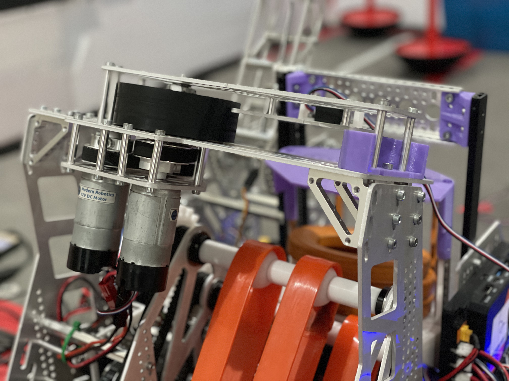
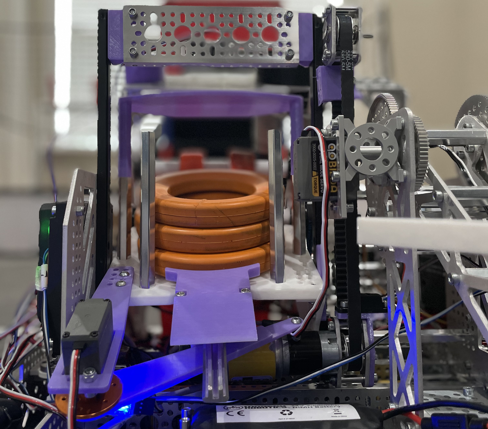
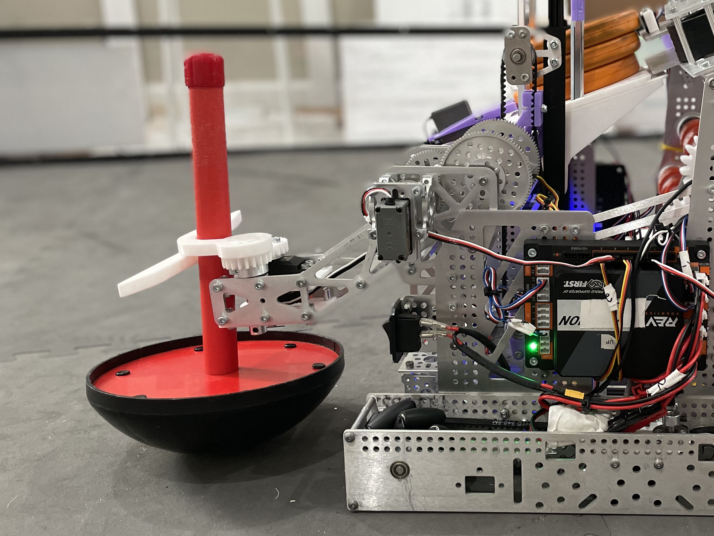
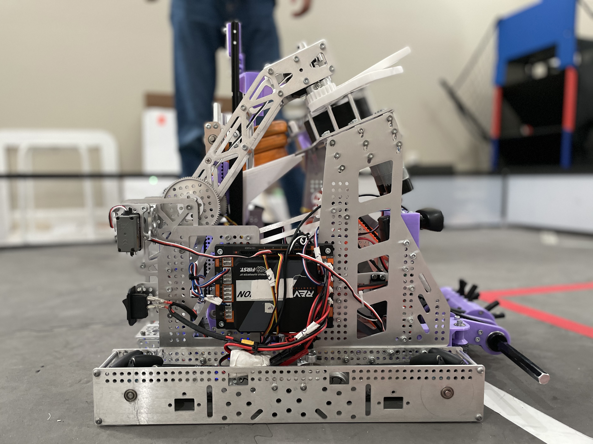
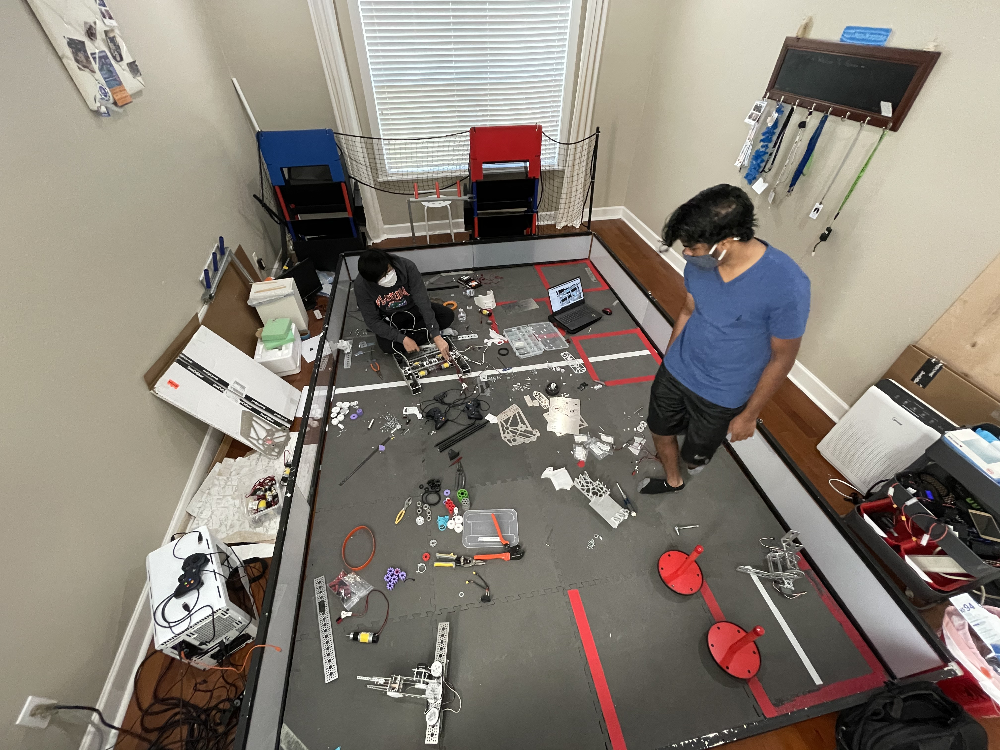

Hello and welcome to the meet 5/March 2021 newsletter. This newsletter is
relatively short and robot-oriented due to a full robot redesign for meet 5. With meet 6 and the
league competition quickly approaching, the next newsletter will be primarily documentation and
judging oriented as we switch gears from robot progression to preparing for the league competition.
For now, enjoy the new robot :)
Meet 5 Robot Recap
Since last meet, the robot has been fully stripped down and rebuilt for the
3rd time this season. This new design is set up to be a platform for the rest of the season oriented
around speed and consistency. Although it was successful in the speed portion as you'll see later, we
have a long way to go with consistency as we do with any new design which will be the main focus for
the rest of the season.

Intake
The most substantial improvement in robot performance can be attributed to
the intake. As we hoped, it provided consistency in performance that the previous design was
lacking. We accomplished this by adding a series of rollers that widened the reach of the intake.
These rollers allowed us to pick up rings by scraping them along the ground instead of having to
force them inside the robot by ramming in to walls. We also added belts on the side of the intake
that shift rings into the center (as demonstrated in the video) allowing us to intake rings from
virtually anywhere along the front of the robot rather than the 6-inch space we had previously.
Overall, the intake has transformed our cycle times cutting about 3 seconds off of the previous 12
seconds by itself. Due to the success of the module, we don't have many planned changes for it other
than some basic structural changes to the front roller to make it more rigid.
Shooter
Although the changes made to the shooter ultimately simplified it, it's
performing drastically better than it did previously. As shown in the video, the arc the rings take
when shot is straighter and more consistent than previous modules. This new arc makes both our
software team and driver's life much easier as they can now point the robot at the goal and shoot
rather than having to consider whether or not the shot may bank and any other strange ways the rings
may behave. It also gets up to its target speed faster and more consistently due to having two
motors on one wheel. All of these improvements have made the shooter near perfection and we don't
have many improvements in mind for the future.
Transfer

One of the biggest reliability issues we had with the previous robot was the
string that pulled the transfer up either coming off the spool or snapping. To mitigate this issue,
we went from a string to a belt drive making the module more difficult to break from basic usage. Additionally, we changed from a flicker to a linear push mechanism due to space
constraints and for speed. While we haven't seen a huge performance benefit out of it yet, we should
see a pretty substantial speed increase with more optimization. This module as a whole has likely
the most revisions to come as we still have a lot of optimization to do all around. We've had issues
with rings jamming when coming in from the intake which has caused nearly all performance benefits
to vanish. Therefore, we are testing all sorts of different configurations for meet 6.
Wobble

We are proud to say that our wobble mechanism is now the most over-engineered
module on the robot! The main reason for the full redesign of this module was to allow for a super-wide grabbing mechanism that has nearly 5 inches of range making the drivers' lives easier. The new
geometry of the arm also folds into the robot better and was designed specifically for dropping the
wobble over the field wall which is something we had issues with in the past. Although this module
was the least in need of a redesign, the new version came out really well and the benefits it
provides are nice to have.
Autonomous
With the new modules, we've been able to build a faster and more consistent
auto. We were able to raise our maximum autonomous score from 83 to 107 points due to these new
modules behaving in a more predictable manner which has been a huge help in increasing our overall
scores. In the future, we are working on increasing the autonomous score but more importantly
focussing on getting those high scores consistently and trying to find ways that we can enhance our
drivers' abilities by automating their tasks.
Robot Summary

Overall this robot has set a fantastic foundation for us to work off of the
rest of the season and we are excited to see just how far we can push this design. While this robot
did have issues as we'd expect with any first iteration design, it performed better than many of us
expected and we are happy with what worked well and what didn't. The platform really does show a lot
of potential and pushing it to its limits, breaking it, and fixing it is going to be a fun way to
finish off this robot for the year.
Match Video
With our 107 point autonomous, we were able to get 342 points in a
match! Our drivers also did a fantastic job and didn't miss a single one of the 25 shots we took! In
meet 6, we are aiming to see scores like this consistently with more driver practice and slight
tweaks to the robot. With this being a first iteration design, our consistency wasn't spectacular with an
average of 222 for the meet but we are fairly confident that we can reach a near 300 point average for
meet 6. Check out the match video!
Summary

Since this summary was robot oriented and the League competition is just around the corner, the meet
6/late March entry will be primarily notebook and presentation-oriented so be sure to stay tuned for
that!
For now, here is the full summary:
Full meet 5 robot redesign
Intake - worked to near perfection with a wider reach and more consistency in performance
than the previous design
Shooter - has a faster and improved shooting arc that has been near perfection with
consistency
Transfer - belt drive has increased reliability and the new linear push mechanism has shown
potential for faster cycle times
Wobble Goal - now has a wider range the drivers can grab from and folds into the robot
better for. Likely the final design for the season.
We had a new high score of 342 points!
First Flight Crew has officially begun and we are currently recording interviews for
publication
In preparation for the league competition, we are currently switching gears to work on our
notebook and presentation
If you are interested in judging or helping us with our presentation, contact us!
We are looking for new members! If you know any students 7th grade and up who would be a
good candidate for the team and live locally, be sure to let us know!
After delivering our videos to SendCutSend, they generously gave us an additional $1000 to
help us build the robot for the rest of the season and to enable us to do off season
projects for freshman training!
As always, thank you to our sponsors, family, friends, and mentors for your support. We are now
entering a part of the season where we are focussing on documentation and presentation. If you have
any experience in this area, please reach out for us. Thank you for your everlasting support and
stay tuned for more!